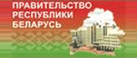

| Главная |
| Символика |
| География |
| История |
| Культура |
| Ресурсы |
Содержание: Государственная символика
-
Государственный флаг Республики Беларусь
-
Государственный герб Республики Беларусь
-
Государственный гимн Республики Беларусь
Государственный флаг Республики Беларусь
Государственный флаг Республики Беларусь является символом государственного суверенитета Республики Беларусь, представляет собой прямоугольное полотнище, состоящее из двух горизонтально расположенных цветных полос: верхней – красного цвета шириной в 2/3 и нижней – зеленого цвета в 1/3 ширины флага. Около древка вертикально расположен белорусский национальный орнамент красного цвета на белом поле, составляющий 1/9 длины флага. Отношение ширины флага к его длине – 1:2. Флаг крепится на древке (флагштоке), которое окрашивается в золотистый (охра) цвет.
При церемониях и других торжественных мероприятиях Государственный флаг Республики Беларусь используется с наконечником ромбовидной формы с изображением пятиконечной звезды, аналогичной ее изображению на Государственном гербе Республики Беларусь. Наконечники изготавливаются из металла желтого цвета.
Государственный герб Республики Беларусь
Государственный герб Республики Беларусь является символом государственного суверенитета Республики Беларусь, представляет собой зеленый контур Республики Беларусь в золотых лучах солнца над земным шаром. Сверху контура находится пятиконечная красная звезда. Герб обрамляет венок из золотых колосьев, переплетенных справа цветками клевера, слева – льна. Колосья обвиты красно-зеленой лентой, на которой снизу сделана надпись золотом: "Рэспублiка Беларусь".
Государственный гимн Республики Беларусь
ДЗЯРЖАЎНЫ ГІМН РЭСПУБЛІКІ БЕЛАРУСЬ
Словы М.Клімковіча, У.Карызны
Музыка Н.Сакалоўскага
Мы, беларусы – мірныя людзі,
Сэрцам адданыя роднай зямлі,
Шчыра сябруем, сілы гартуем
Мы ў працавітай, вольнай сям'і.
Слаўся, зямлі нашай светлае імя,
Слаўся, народаў братэрскі саюз!
Наша любімая маці-Радзіма,
Вечна жыві і квітней, Беларусь!
Разам з братамі мужна вякамі
Мы баранілі родны парог,
У бітвах за волю, бітвах за долю
Свой здабывалі сцяг перамог!
Слаўся, зямлі нашай светлае імя,
Слаўся, народаў братэрскі саюз!
Наша любімая маці-Радзіма,
Вечна жыві і квітней, Беларусь!
Дружба народаў – сіла народаў -
Наш запаветны, сонечны шлях.
Горда ж узвіся ў ясныя высі,
Сцяг пераможны – радасці сцяг!
Слаўся, зямлі нашай светлае імя,
Слаўся, народаў братэрскі саюз!
Наша любімая маці-Радзіма,
Вечна жыві і квітней, Беларусь!
| интернет-ресурсы |
 |
|  |
 |
 |